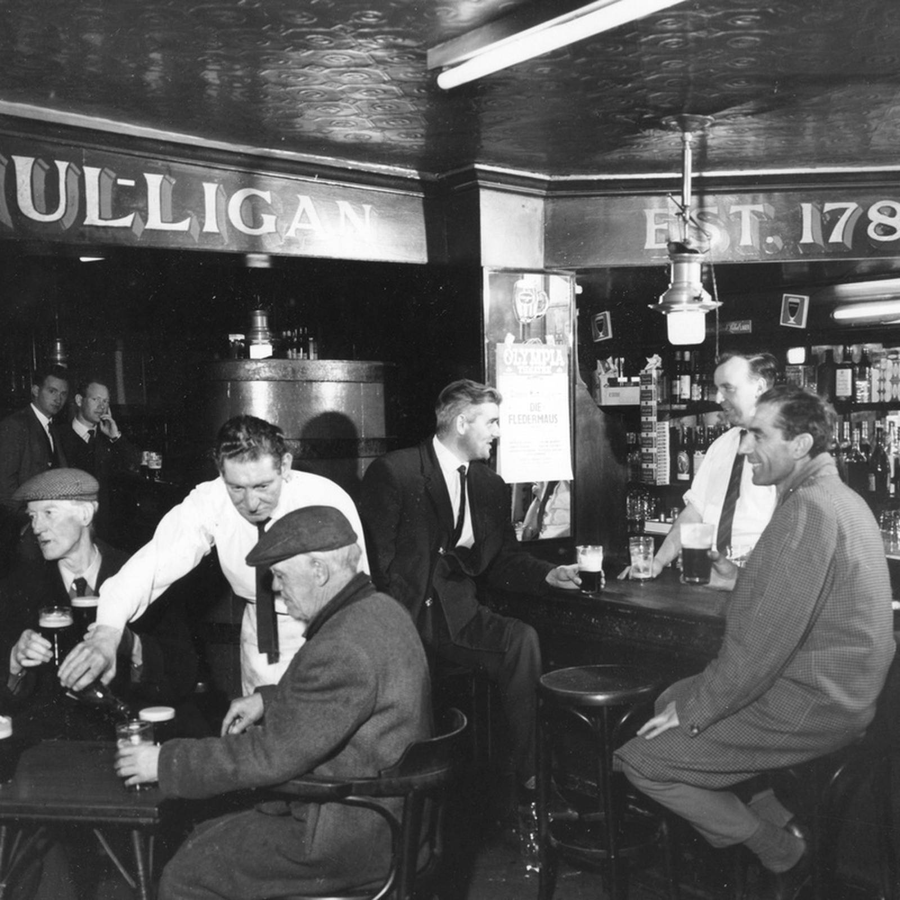
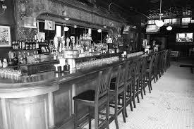
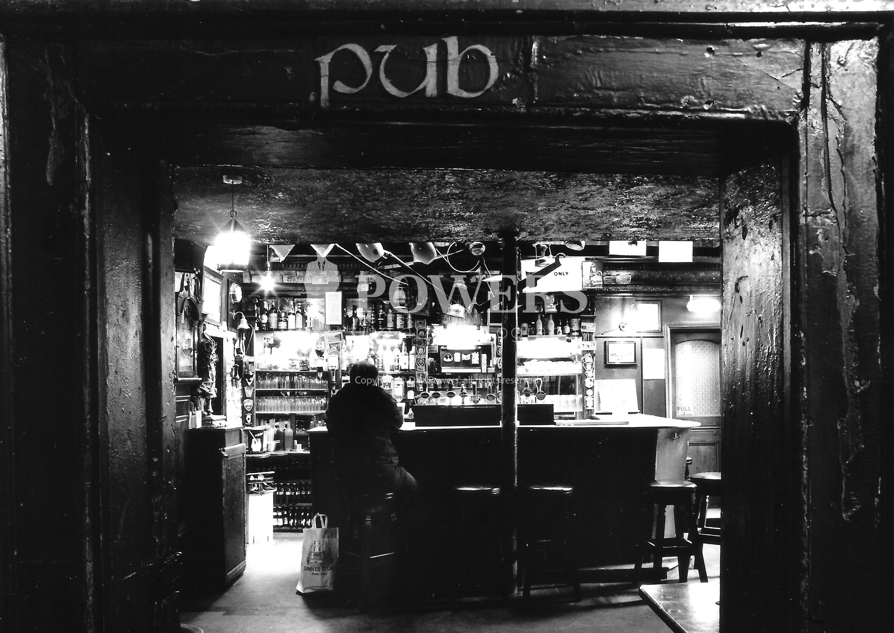
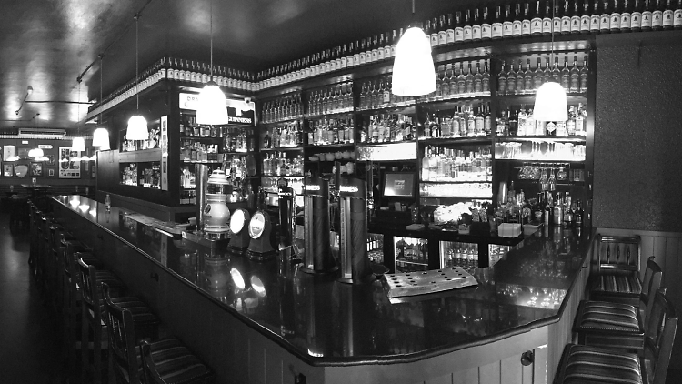

About Us




Nestled within the picturesque landscapes of Athlone, Ireland, in the storied County Westmeath, lies The Leprechaun Inn—an age-old tavern steeped in the whimsy and folklore of ancient Celtic lands. Our tale unfurls in the misty year of 800 AD when the spirited O'Malley family, renowned for their love of revelry and masterful brewing, founded this cherished establishment.
Legend has it that the O'Malley's stumbled upon a secluded glen near Athlone, where the veil between worlds was at its thinnest. Here, amidst the enchantment of the surroundings, they crafted their renowned elixirs inspired by the whispers of leprechauns and the laughter of fairies. It was within the walls of The Leprechaun Inn that the first batches of whiskey, the nectar of Irish tradition, were born—each drop infused with the mystical charm of its birthplace.
From these early experiments, the inn became a crucible for innovation in brewing and distillation. The O'Malley's honed their craft, concocting a spectrum of libations that tantalized the palate—aromatic ales, potent spirits, and elixirs steeped in herbs and secrets passed down through generations.
The atmosphere within The Leprechaun Inn was one of joviality and celebration, where locals and travelers alike found solace from their journeys. The tavern's walls echoed with hearty laughter, the clinking of tankards, and the melodies of minstrels weaving tales of adventure and love.
Through the ages, The Leprechaun Inn has remained a beacon of conviviality, evolving with time while preserving its ancient charm and mystical aura. Every stone carries the laughter of generations, and each wooden beam reverberates with the echoes of nights filled with music, dance, and camaraderie.
Today, as custodians of this storied tavern in Athlone, we honor the O'Malley lineage, ensuring every visitor experiences the magic of Ireland's mythical past. Come join us at The Leprechaun Inn, where the spirits of ancient revelry linger, and the warmth of Irish hospitality awaits amidst the enchanting County Westmeath.
Come see how fascinating the history of the Leprechaun Inn is in person if you'd like to learn more about it. Make a reservation for a history talk visit time below right now!
Book a reservation
 leprechauninn@info.ie |
leprechauninn@info.ie |  Athlone, Co
Westmeath |
Athlone, Co
Westmeath |  +353 12 321 3454
+353 12 321 3454